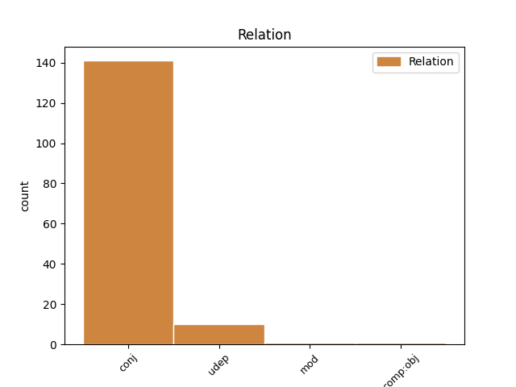
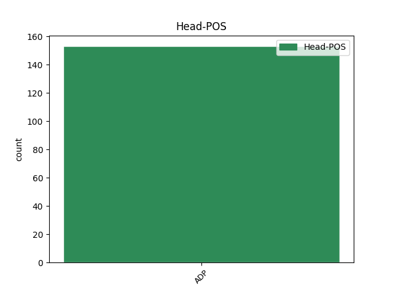
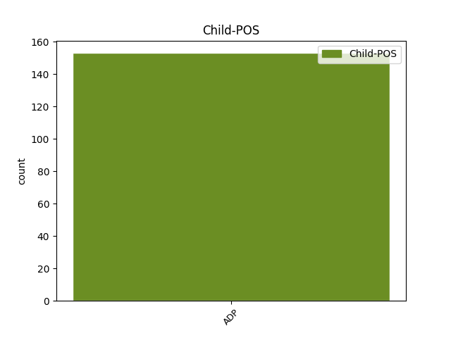

Distribution of features within this leaf



Agreement Rules sorted by frequency.
When the head token is ADP and the dependent token is ADP.
1 Občanská _ _ _ _ 0 _ _ _
2 sdružení _ _ _ _ 0 _ _ _
3 , _ _ _ _ 0 _ _ _
4 jejich _ _ _ _ 0 _ _ _
5 organizační _ _ _ _ 0 _ _ _
6 jednotky _ _ _ _ 0 _ _ _
7 , _ _ _ _ 0 _ _ _
8 které _ _ _ _ 0 _ _ _
9 mají _ _ _ _ 0 _ _ _
10 právní _ _ _ _ 0 _ _ _
11 subjektivitu _ _ _ _ 0 _ _ _
12 , _ _ _ _ 0 _ _ _
13 církve _ _ _ _ 0 _ _ _
14 a _ _ _ _ 0 _ _ _
15 náboženské _ _ _ _ 0 _ _ _
16 společnosti _ _ _ _ 0 _ _ _
17 nebo _ _ _ _ 0 _ _ _
18 církevní _ _ _ _ 0 _ _ _
19 instituce _ _ _ _ 0 _ _ _
20 , _ _ _ _ 0 _ _ _
21 které _ _ _ _ 0 _ _ _
22 jsou _ _ _ _ 0 _ _ _
23 církevní _ _ _ _ 0 _ _ _
24 právnickou _ _ _ _ 0 _ _ _
25 osobou _ _ _ _ 0 _ _ _
26 , _ _ _ _ 0 _ _ _
27 a _ _ _ _ 0 _ _ _
28 honební _ _ _ _ 0 _ _ _
29 společenstva _ _ _ _ 0 _ _ _
30 mohou _ _ _ _ 0 _ _ _
31 vést _ _ _ _ 0 _ _ _
32 účetnictví _ _ _ _ 0 _ _ _
33 podle _ _ _ _ 0 _ _ _
34 zákona_č._563/1991_Sb. _ _ _ _ 0 _ _ _
35 , _ _ _ _ 0 _ _ _
36 o o ADP RR--6---------- AdpType=Prep|Case=Loc 0 _ _ _
37 účetnictví _ _ _ _ 0 _ _ _
38 , _ _ _ _ 0 _ _ _
39 ve v ADP RV--6---------- AdpType=Voc|Case=Loc 36 conj _ LId=v-1
40 znění _ _ _ _ 0 _ _ _
41 zákona_č._117/1994_Sb.,_zákona_č._227/1997_Sb.,_zákona_č._492/2000_Sb.,_zákona_č._353/2001_Sb._a_zákona_č._437/2003_Sb. _ _ _ _ 0 _ _ _
42 , _ _ _ _ 0 _ _ _
43 pokud _ _ _ _ 0 _ _ _
44 jejich _ _ _ _ 0 _ _ _
45 celkové _ _ _ _ 0 _ _ _
46 příjmy _ _ _ _ 0 _ _ _
47 za _ _ _ _ 0 _ _ _
48 poslední _ _ _ _ 0 _ _ _
49 uzavřené _ _ _ _ 0 _ _ _
50 účetní _ _ _ _ 0 _ _ _
51 období _ _ _ _ 0 _ _ _
52 nepřesáhnou _ _ _ _ 0 _ _ _
53 3000000 _ _ _ _ 0 _ _ _
54 Kč _ _ _ _ 0 _ _ _
55 ; _ _ _ _ 0 _ _ _
56 přitom _ _ _ _ 0 _ _ _
57 se _ _ _ _ 0 _ _ _
58 na _ _ _ _ 0 _ _ _
59 ně _ _ _ _ 0 _ _ _
60 vztahují _ _ _ _ 0 _ _ _
61 ustanovení _ _ _ _ 0 _ _ _
62 zákona_č._563/1991_Sb. _ _ _ _ 0 _ _ _
63 , _ _ _ _ 0 _ _ _
64 o _ _ _ _ 0 _ _ _
65 účetnictví _ _ _ _ 0 _ _ _
66 , _ _ _ _ 0 _ _ _
67 a _ _ _ _ 0 _ _ _
68 jeho _ _ _ _ 0 _ _ _
69 prováděcích _ _ _ _ 0 _ _ _
70 právních _ _ _ _ 0 _ _ _
71 předpisů _ _ _ _ 0 _ _ _
72 , _ _ _ _ 0 _ _ _
73 která _ _ _ _ 0 _ _ _
74 upravují _ _ _ _ 0 _ _ _
75 účtování _ _ _ _ 0 _ _ _
76 v _ _ _ _ 0 _ _ _
77 soustavě _ _ _ _ 0 _ _ _
78 jednoduchého _ _ _ _ 0 _ _ _
79 účetnictví _ _ _ _ 0 _ _ _
80 , _ _ _ _ 0 _ _ _
81 ve _ _ _ _ 0 _ _ _
82 znění _ _ _ _ 0 _ _ _
83 účinném _ _ _ _ 0 _ _ _
84 k _ _ _ _ 0 _ _ _
85 31 _ _ _ _ 0 _ _ _
86 . _ _ _ _ 0 _ _ _
87 prosinci _ _ _ _ 0 _ _ _
88 2003 _ _ _ _ 0 _ _ _
89 . _ _ _ _ 0 _ _ _
Disagree Examples:
1 (1) _ _ _ _ 0 _ _ _
2 Položka _ _ _ _ 0 _ _ _
3 " _ _ _ _ 0 _ _ _
4 B.I._Dlouhodobý_nehmotný_majetek _ _ _ _ 0 _ _ _
5 " _ _ _ _ 0 _ _ _
6 obsahuje _ _ _ _ 0 _ _ _
7 zejména _ _ _ _ 0 _ _ _
8 zřizovací _ _ _ _ 0 _ _ _
9 výdaje _ _ _ _ 0 _ _ _
10 , _ _ _ _ 0 _ _ _
11 nehmotné _ _ _ _ 0 _ _ _
12 výsledky _ _ _ _ 0 _ _ _
13 výzkumu _ _ _ _ 0 _ _ _
14 a _ _ _ _ 0 _ _ _
15 vývoje _ _ _ _ 0 _ _ _
16 , _ _ _ _ 0 _ _ _
17 software _ _ _ _ 0 _ _ _
18 , _ _ _ _ 0 _ _ _
19 ocenitelná _ _ _ _ 0 _ _ _
20 práva _ _ _ _ 0 _ _ _
21 a _ _ _ _ 0 _ _ _
22 goodwill _ _ _ _ 0 _ _ _
23 s s ADP RR--7---------- AdpType=Prep|Case=Ins 0 _ _ _
24 dobou _ _ _ _ 0 _ _ _
25 použitelnosti _ _ _ _ 0 _ _ _
26 delší _ _ _ _ 0 _ _ _
27 než _ _ _ _ 0 _ _ _
28 jeden _ _ _ _ 0 _ _ _
29 rok _ _ _ _ 0 _ _ _
30 a _ _ _ _ 0 _ _ _
31 od od ADP RR--2---------- AdpType=Prep|Case=Gen 23 conj _ LId=od-1
32 výše _ _ _ _ 0 _ _ _
33 ocenění _ _ _ _ 0 _ _ _
34 určené _ _ _ _ 0 _ _ _
35 účetní _ _ _ _ 0 _ _ _
36 jednotkou _ _ _ _ 0 _ _ _
37 , _ _ _ _ 0 _ _ _
38 s _ _ _ _ 0 _ _ _
39 výjimkou _ _ _ _ 0 _ _ _
40 goodwillu _ _ _ _ 0 _ _ _
41 , _ _ _ _ 0 _ _ _
42 a _ _ _ _ 0 _ _ _
43 při _ _ _ _ 0 _ _ _
44 splnění _ _ _ _ 0 _ _ _
45 podmínek _ _ _ _ 0 _ _ _
46 dále _ _ _ _ 0 _ _ _
47 stanovených _ _ _ _ 0 _ _ _
48 a _ _ _ _ 0 _ _ _
49 při _ _ _ _ 0 _ _ _
50 splnění _ _ _ _ 0 _ _ _
51 povinností _ _ _ _ 0 _ _ _
52 stanovených _ _ _ _ 0 _ _ _
53 zákonem _ _ _ _ 0 _ _ _
54 , _ _ _ _ 0 _ _ _
55 zejména _ _ _ _ 0 _ _ _
56 respektováním _ _ _ _ 0 _ _ _
57 principu _ _ _ _ 0 _ _ _
58 významnosti _ _ _ _ 0 _ _ _
59 a _ _ _ _ 0 _ _ _
60 věrného _ _ _ _ 0 _ _ _
61 a _ _ _ _ 0 _ _ _
62 poctivého _ _ _ _ 0 _ _ _
63 zobrazení _ _ _ _ 0 _ _ _
64 majetku _ _ _ _ 0 _ _ _
65 . _ _ _ _ 0 _ _ _
1 (1) _ _ _ _ 0 _ _ _
2 Položka _ _ _ _ 0 _ _ _
3 " _ _ _ _ 0 _ _ _
4 B.I._Dlouhodobý_nehmotný_majetek _ _ _ _ 0 _ _ _
5 " _ _ _ _ 0 _ _ _
6 obsahuje _ _ _ _ 0 _ _ _
7 zejména _ _ _ _ 0 _ _ _
8 zřizovací _ _ _ _ 0 _ _ _
9 výdaje _ _ _ _ 0 _ _ _
10 , _ _ _ _ 0 _ _ _
11 nehmotné _ _ _ _ 0 _ _ _
12 výsledky _ _ _ _ 0 _ _ _
13 výzkumu _ _ _ _ 0 _ _ _
14 a _ _ _ _ 0 _ _ _
15 vývoje _ _ _ _ 0 _ _ _
16 , _ _ _ _ 0 _ _ _
17 software _ _ _ _ 0 _ _ _
18 , _ _ _ _ 0 _ _ _
19 ocenitelná _ _ _ _ 0 _ _ _
20 práva _ _ _ _ 0 _ _ _
21 a _ _ _ _ 0 _ _ _
22 goodwill _ _ _ _ 0 _ _ _
23 s _ _ _ _ 0 _ _ _
24 dobou _ _ _ _ 0 _ _ _
25 použitelnosti _ _ _ _ 0 _ _ _
26 delší _ _ _ _ 0 _ _ _
27 než _ _ _ _ 0 _ _ _
28 jeden _ _ _ _ 0 _ _ _
29 rok _ _ _ _ 0 _ _ _
30 a _ _ _ _ 0 _ _ _
31 od od ADP RR--2---------- AdpType=Prep|Case=Gen 0 _ _ _
32 výše _ _ _ _ 0 _ _ _
33 ocenění _ _ _ _ 0 _ _ _
34 určené _ _ _ _ 0 _ _ _
35 účetní _ _ _ _ 0 _ _ _
36 jednotkou _ _ _ _ 0 _ _ _
37 , _ _ _ _ 0 _ _ _
38 s _ _ _ _ 0 _ _ _
39 výjimkou _ _ _ _ 0 _ _ _
40 goodwillu _ _ _ _ 0 _ _ _
41 , _ _ _ _ 0 _ _ _
42 a _ _ _ _ 0 _ _ _
43 při při ADP RR--6---------- AdpType=Prep|Case=Loc 31 conj _ LId=při-1
44 splnění _ _ _ _ 0 _ _ _
45 podmínek _ _ _ _ 0 _ _ _
46 dále _ _ _ _ 0 _ _ _
47 stanovených _ _ _ _ 0 _ _ _
48 a _ _ _ _ 0 _ _ _
49 při _ _ _ _ 0 _ _ _
50 splnění _ _ _ _ 0 _ _ _
51 povinností _ _ _ _ 0 _ _ _
52 stanovených _ _ _ _ 0 _ _ _
53 zákonem _ _ _ _ 0 _ _ _
54 , _ _ _ _ 0 _ _ _
55 zejména _ _ _ _ 0 _ _ _
56 respektováním _ _ _ _ 0 _ _ _
57 principu _ _ _ _ 0 _ _ _
58 významnosti _ _ _ _ 0 _ _ _
59 a _ _ _ _ 0 _ _ _
60 věrného _ _ _ _ 0 _ _ _
61 a _ _ _ _ 0 _ _ _
62 poctivého _ _ _ _ 0 _ _ _
63 zobrazení _ _ _ _ 0 _ _ _
64 majetku _ _ _ _ 0 _ _ _
65 . _ _ _ _ 0 _ _ _
1 Zřizovacími _ _ _ _ 0 _ _ _
2 výdaji _ _ _ _ 0 _ _ _
3 nejsou _ _ _ _ 0 _ _ _
4 zejména _ _ _ _ 0 _ _ _
5 výdaje _ _ _ _ 0 _ _ _
6 na na ADP RR--4---------- AdpType=Prep|Case=Acc 0 _ _ _
7 pořízení _ _ _ _ 0 _ _ _
8 dlouhodobého _ _ _ _ 0 _ _ _
9 majetku _ _ _ _ 0 _ _ _
10 a _ _ _ _ 0 _ _ _
11 zásob _ _ _ _ 0 _ _ _
12 , _ _ _ _ 0 _ _ _
13 na na ADP RR--6---------- AdpType=Prep|Case=Loc 6 conj _ LId=na-1
14 reprezentaci _ _ _ _ 0 _ _ _
15 nebo _ _ _ _ 0 _ _ _
16 výdaje _ _ _ _ 0 _ _ _
17 související _ _ _ _ 0 _ _ _
18 s _ _ _ _ 0 _ _ _
19 přeměnou _ _ _ _ 0 _ _ _
20 společnosti _ _ _ _ 0 _ _ _
21 nebo _ _ _ _ 0 _ _ _
22 družstva _ _ _ _ 0 _ _ _
23 , _ _ _ _ 0 _ _ _
24 b) _ _ _ _ 0 _ _ _
25 nehmotnými _ _ _ _ 0 _ _ _
26 výsledky _ _ _ _ 0 _ _ _
27 výzkumu _ _ _ _ 0 _ _ _
28 a _ _ _ _ 0 _ _ _
29 vývoje _ _ _ _ 0 _ _ _
30 a _ _ _ _ 0 _ _ _
31 software _ _ _ _ 0 _ _ _
32 takové _ _ _ _ 0 _ _ _
33 výsledky _ _ _ _ 0 _ _ _
34 a _ _ _ _ 0 _ _ _
35 software _ _ _ _ 0 _ _ _
36 , _ _ _ _ 0 _ _ _
37 které _ _ _ _ 0 _ _ _
38 jsou _ _ _ _ 0 _ _ _
39 buď _ _ _ _ 0 _ _ _
40 vytvořeny _ _ _ _ 0 _ _ _
41 vlastní _ _ _ _ 0 _ _ _
42 činností _ _ _ _ 0 _ _ _
43 k _ _ _ _ 0 _ _ _
44 obchodování _ _ _ _ 0 _ _ _
45 s _ _ _ _ 0 _ _ _
46 nimi _ _ _ _ 0 _ _ _
47 a _ _ _ _ 0 _ _ _
48 nebo _ _ _ _ 0 _ _ _
49 nabyty _ _ _ _ 0 _ _ _
50 od _ _ _ _ 0 _ _ _
51 jiných _ _ _ _ 0 _ _ _
52 osob _ _ _ _ 0 _ _ _
53 , _ _ _ _ 0 _ _ _
54 c) _ _ _ _ 0 _ _ _
55 ocenitelnými _ _ _ _ 0 _ _ _
56 právy _ _ _ _ 0 _ _ _
57 zejména _ _ _ _ 0 _ _ _
58 předměty _ _ _ _ 0 _ _ _
59 průmyslového _ _ _ _ 0 _ _ _
60 a _ _ _ _ 0 _ _ _
61 obdobného _ _ _ _ 0 _ _ _
62 vlastnictví _ _ _ _ 0 _ _ _
63 , _ _ _ _ 0 _ _ _
64 výsledky _ _ _ _ 0 _ _ _
65 duševní _ _ _ _ 0 _ _ _
66 tvůrčí _ _ _ _ 0 _ _ _
67 činnosti _ _ _ _ 0 _ _ _
68 a _ _ _ _ 0 _ _ _
69 práva _ _ _ _ 0 _ _ _
70 podle _ _ _ _ 0 _ _ _
71 zvláštních _ _ _ _ 0 _ _ _
72 právních _ _ _ _ 0 _ _ _
73 předpisů _ _ _ _ 0 _ _ _
74 za _ _ _ _ 0 _ _ _
75 podmínek _ _ _ _ 0 _ _ _
76 stanovených _ _ _ _ 0 _ _ _
77 v _ _ _ _ 0 _ _ _
78 písmenu _ _ _ _ 0 _ _ _
79 b) _ _ _ _ 0 _ _ _
80 , _ _ _ _ 0 _ _ _
81 d) _ _ _ _ 0 _ _ _
82 goodwillem _ _ _ _ 0 _ _ _
83 pro _ _ _ _ 0 _ _ _
84 účely _ _ _ _ 0 _ _ _
85 této _ _ _ _ 0 _ _ _
86 vyhlášky _ _ _ _ 0 _ _ _
87 kladný _ _ _ _ 0 _ _ _
88 nebo _ _ _ _ 0 _ _ _
89 záporný _ _ _ _ 0 _ _ _
90 rozdíl _ _ _ _ 0 _ _ _
91 mezi _ _ _ _ 0 _ _ _
92 oceněním _ _ _ _ 0 _ _ _
93 podniku _ _ _ _ 0 _ _ _
94 , _ _ _ _ 0 _ _ _
95 nebo _ _ _ _ 0 _ _ _
96 jeho _ _ _ _ 0 _ _ _
97 části _ _ _ _ 0 _ _ _
98 ve _ _ _ _ 0 _ _ _
99 smyslu _ _ _ _ 0 _ _ _
100 obchodního _ _ _ _ 0 _ _ _
101 zákoníku _ _ _ _ 0 _ _ _
102 , _ _ _ _ 0 _ _ _
103 nabytého _ _ _ _ 0 _ _ _
104 zejména _ _ _ _ 0 _ _ _
105 koupí _ _ _ _ 0 _ _ _
106 , _ _ _ _ 0 _ _ _
107 vkladem _ _ _ _ 0 _ _ _
108 nebo _ _ _ _ 0 _ _ _
109 oceněním _ _ _ _ 0 _ _ _
110 majetku _ _ _ _ 0 _ _ _
111 a _ _ _ _ 0 _ _ _
112 závazků _ _ _ _ 0 _ _ _
113 v _ _ _ _ 0 _ _ _
114 rámci _ _ _ _ 0 _ _ _
115 přeměn _ _ _ _ 0 _ _ _
116 společnosti _ _ _ _ 0 _ _ _
117 a _ _ _ _ 0 _ _ _
118 souhrnem _ _ _ _ 0 _ _ _
119 jeho _ _ _ _ 0 _ _ _
120 individuálně _ _ _ _ 0 _ _ _
121 přeceněných _ _ _ _ 0 _ _ _
122 složek _ _ _ _ 0 _ _ _
123 majetku _ _ _ _ 0 _ _ _
124 sníženým _ _ _ _ 0 _ _ _
125 o _ _ _ _ 0 _ _ _
126 převzaté _ _ _ _ 0 _ _ _
127 závazky _ _ _ _ 0 _ _ _
128 . _ _ _ _ 0 _ _ _
1 (3) _ _ _ _ 0 _ _ _
2 Položka _ _ _ _ 0 _ _ _
3 " _ _ _ _ 0 _ _ _
4 B.II.3._Samostatné_movité_věci_a_soubory_movitých_věcí _ _ _ _ 0 _ _ _
5 " _ _ _ _ 0 _ _ _
6 obsahuje _ _ _ _ 0 _ _ _
7 a) _ _ _ _ 0 _ _ _
8 předměty _ _ _ _ 0 _ _ _
9 z _ _ _ _ 0 _ _ _
10 drahých _ _ _ _ 0 _ _ _
11 kovů _ _ _ _ 0 _ _ _
12 bez _ _ _ _ 0 _ _ _
13 ohledu _ _ _ _ 0 _ _ _
14 na _ _ _ _ 0 _ _ _
15 výši _ _ _ _ 0 _ _ _
16 ocenění _ _ _ _ 0 _ _ _
17 , _ _ _ _ 0 _ _ _
18 b) _ _ _ _ 0 _ _ _
19 samostatné _ _ _ _ 0 _ _ _
20 movité _ _ _ _ 0 _ _ _
21 věci _ _ _ _ 0 _ _ _
22 a _ _ _ _ 0 _ _ _
23 soubory _ _ _ _ 0 _ _ _
24 movitých _ _ _ _ 0 _ _ _
25 věcí _ _ _ _ 0 _ _ _
26 se _ _ _ _ 0 _ _ _
27 samostatným _ _ _ _ 0 _ _ _
28 technicko-ekonomickým _ _ _ _ 0 _ _ _
29 určením _ _ _ _ 0 _ _ _
30 s s ADP RR--7---------- AdpType=Prep|Case=Ins 0 _ _ _
31 dobou _ _ _ _ 0 _ _ _
32 použitelnosti _ _ _ _ 0 _ _ _
33 delší _ _ _ _ 0 _ _ _
34 než _ _ _ _ 0 _ _ _
35 jeden _ _ _ _ 0 _ _ _
36 rok _ _ _ _ 0 _ _ _
37 a _ _ _ _ 0 _ _ _
38 od od ADP RR--2---------- AdpType=Prep|Case=Gen 30 conj _ LId=od-1
39 výše _ _ _ _ 0 _ _ _
40 ocenění _ _ _ _ 0 _ _ _
41 určené _ _ _ _ 0 _ _ _
42 účetní _ _ _ _ 0 _ _ _
43 jednotkou _ _ _ _ 0 _ _ _
44 , _ _ _ _ 0 _ _ _
45 a _ _ _ _ 0 _ _ _
46 to _ _ _ _ 0 _ _ _
47 při _ _ _ _ 0 _ _ _
48 splnění _ _ _ _ 0 _ _ _
49 povinností _ _ _ _ 0 _ _ _
50 stanovených _ _ _ _ 0 _ _ _
51 zákonem _ _ _ _ 0 _ _ _
52 , _ _ _ _ 0 _ _ _
53 zejména _ _ _ _ 0 _ _ _
54 respektováním _ _ _ _ 0 _ _ _
55 principu _ _ _ _ 0 _ _ _
56 významnosti _ _ _ _ 0 _ _ _
57 a _ _ _ _ 0 _ _ _
58 věrného _ _ _ _ 0 _ _ _
59 a _ _ _ _ 0 _ _ _
60 poctivého _ _ _ _ 0 _ _ _
61 zobrazení _ _ _ _ 0 _ _ _
62 majetku _ _ _ _ 0 _ _ _
63 . _ _ _ _ 0 _ _ _
1 (5) _ _ _ _ 0 _ _ _
2 Položka _ _ _ _ 0 _ _ _
3 " _ _ _ _ 0 _ _ _
4 B.II.5._Dospělá_zvířata_a_jejich_skupiny _ _ _ _ 0 _ _ _
5 " _ _ _ _ 0 _ _ _
6 obsahuje _ _ _ _ 0 _ _ _
7 dospělá _ _ _ _ 0 _ _ _
8 zvířata _ _ _ _ 0 _ _ _
9 a _ _ _ _ 0 _ _ _
10 jejich _ _ _ _ 0 _ _ _
11 skupiny _ _ _ _ 0 _ _ _
12 ( _ _ _ _ 0 _ _ _
13 například _ _ _ _ 0 _ _ _
14 stáda _ _ _ _ 0 _ _ _
15 , _ _ _ _ 0 _ _ _
16 hejna _ _ _ _ 0 _ _ _
17 ) _ _ _ _ 0 _ _ _
18 , _ _ _ _ 0 _ _ _
19 s s ADP RR--7---------- AdpType=Prep|Case=Ins 0 _ _ _
20 dobou _ _ _ _ 0 _ _ _
21 použitelnosti _ _ _ _ 0 _ _ _
22 delší _ _ _ _ 0 _ _ _
23 než _ _ _ _ 0 _ _ _
24 jeden _ _ _ _ 0 _ _ _
25 rok _ _ _ _ 0 _ _ _
26 a _ _ _ _ 0 _ _ _
27 od od ADP RR--2---------- AdpType=Prep|Case=Gen 19 conj _ LId=od-1
28 výše _ _ _ _ 0 _ _ _
29 ocenění _ _ _ _ 0 _ _ _
30 určené _ _ _ _ 0 _ _ _
31 účetní _ _ _ _ 0 _ _ _
32 jednotkou _ _ _ _ 0 _ _ _
33 , _ _ _ _ 0 _ _ _
34 a _ _ _ _ 0 _ _ _
35 to _ _ _ _ 0 _ _ _
36 při _ _ _ _ 0 _ _ _
37 splnění _ _ _ _ 0 _ _ _
38 povinností _ _ _ _ 0 _ _ _
39 stanovených _ _ _ _ 0 _ _ _
40 zákonem _ _ _ _ 0 _ _ _
41 , _ _ _ _ 0 _ _ _
42 zejména _ _ _ _ 0 _ _ _
43 respektováním _ _ _ _ 0 _ _ _
44 principu _ _ _ _ 0 _ _ _
45 významnosti _ _ _ _ 0 _ _ _
46 a _ _ _ _ 0 _ _ _
47 věrného _ _ _ _ 0 _ _ _
48 a _ _ _ _ 0 _ _ _
49 poctivého _ _ _ _ 0 _ _ _
50 zobrazení _ _ _ _ 0 _ _ _
51 majetku _ _ _ _ 0 _ _ _
52 . _ _ _ _ 0 _ _ _